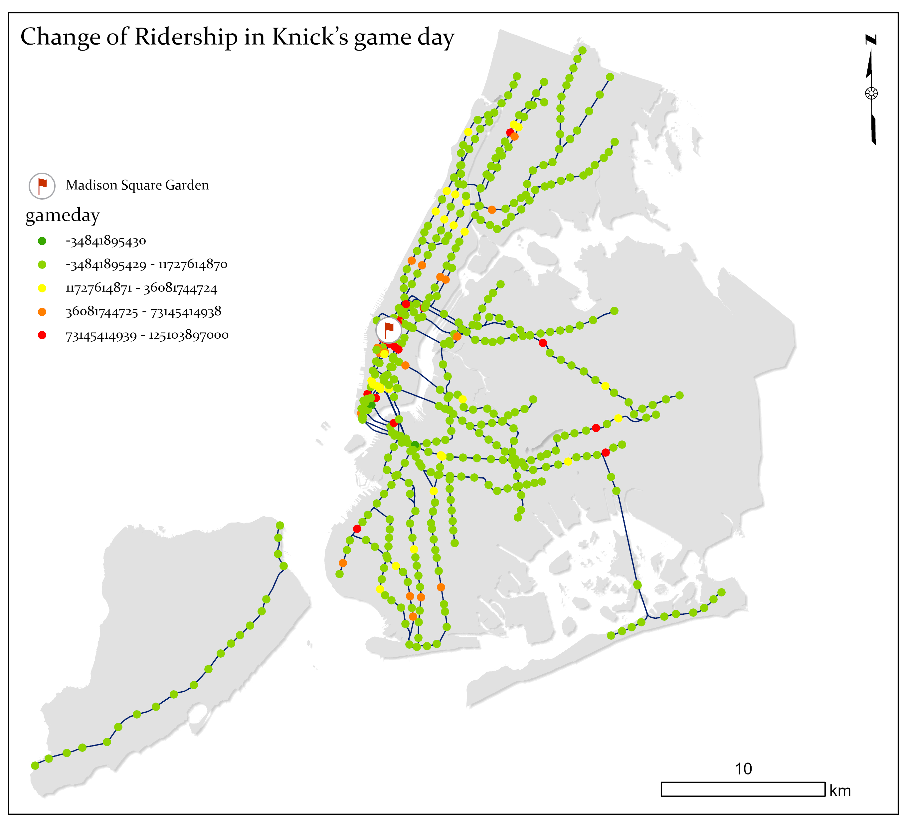

Introduction
Subways provide critical transportation services for New York City. They provide approximately 3.2 million rides per day serving as the most used mode of transportation in the city. It provides an essential role for people living in the city enabling them to commute to work, home, school, and other events. Subways are also the cornerstone of the New York economy, providing consumers to businesses and workers to jobs on a daily basis. With close to 500 stations in NYC, ridership was around 1 billion in 2022. This makes New York City a very accessible city with a booming economy. People travel for a multitude of reasons every single day, but event driven ridership is a major phenomenon that we will be addressing in the paper. The concept of event-driven ridership indicates that during major events such as sports games in NYC, which attract large numbers of people traveling to one given place, there is an increased use of transportation. In our studies, we have seen this increase. We have studied ridership data and compared it to times and days where there are games for teams in the three major sports. We have looked at the New York Knicks, Rangers, and Yankees. The purpose of this analysis is to show how sports affects event driven ridership in NYC and see specifically the differences on days where games are played versus days where no games are played. It is important for city planners, stadium management, and subway riders to understand the trends that are shown in order to prepare for future scenarios. We will address our methodology, data and visualization analysis, results, implications and conclusions.
Data Visualizations
- Sports Event Schedules: Collected from public sources for NYC teams including the Yankees, Mets, Knicks, and others.
- Subway Ridership Data: Hourly data from the MTA, available at data.ny.gov.
Analysis
We aligned sports event schedules with hourly subway ridership data to identify usage spikes around game times. Key methods included:
- Comparing ridership on event days vs. non-event days.
- Analyzing stations near stadiums (e.g., Yankee Stadium, Madison Square Garden) for significant changes.
Visualizations
Subway Usage During Sports Events
Conclusion
Our analysis suggests that sports events significantly increase subway ridership, particularly around game times and near event venues. These findings highlight the critical role of public transportation in supporting large-scale events in NYC.